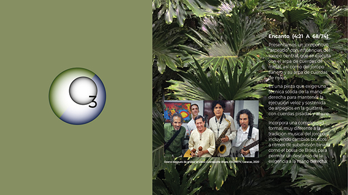

MEDIA: MÚSICA
|
VIDEOS | GALERIA
| CONCIERTOS
|
INFO: FUNCIÓN | INTEGRANTES | TARIFAS | DISTRIBUCIÓN | RIDER |
I N I C I O
INFO: FUNCIÓN | INTEGRANTES | TARIFAS | DISTRIBUCIÓN | RIDER |
{kind=link}
I N I C I O

ENCANTO
(Emilio Mendoza)
A 68 div. binaria / 74 div. ternaria
(Emilio Mendoza)
A 68 div. binaria / 74 div. ternaria
Presentamos un joroponovo
“arpeado” con influencias del joropo central, que se ejecuta
con el arpa de cuerdas de metal, así como del joropo llanero y
su arpa de cuerdas de nylon. Es una pieza que exige una
técnica sólida de la mano derecha para mantener la ejecución
veloz y sostenida de arpegios en la guitarra con cuerdas
pisadas y al aire, e incorpora una complejidad formal, muy
diferente a la tradición musical del joropo, incluyendo
cambios bruscos a ritmos de división binaria como el bossa de
Brasil para permitir un descanso de la exigencia a la mano
derecha.
Esquema formal PDF
Música
• Bonus Track en el CD OzonoJazz en Vivo, Caracas, 2021
(guit 6, 12, voz, sax, bajo, bat, perc y maracas, con Amarillo Piña, pintor)
Grabación en vivo en el Teatro Emma Soler para el video de
Wladimir Rancho Pérez
• En distrokid.com (Audio)
• En YouTube (Audio)
• CD Guarapiche Blues (2020), Cuarteto (guit 6, guit. 12, bajo, maracas)
Esquema formal PDF
Música
• Bonus Track en el CD OzonoJazz en Vivo, Caracas, 2021
(guit 6, 12, voz, sax, bajo, bat, perc y maracas, con Amarillo Piña, pintor)
Grabación en vivo en el Teatro Emma Soler para el video de
Wladimir Rancho Pérez
• En distrokid.com (Audio)
• En YouTube (Audio)
• CD Guarapiche Blues (2020), Cuarteto (guit 6, guit. 12, bajo, maracas)
• En distrokid.com
(Audio)
• En YouTube (Audio)
• CD Laberinto Dúo
(2017), Dúo (guit
6, guit 12)
Comentario
Esta pieza incluye arpegios
sostenidos con los cuatro dedos de la mano derecha (p, i,
m, a) además de golpes secos y charrasqueos de la mano
derecha al estilo del cuatro venezolano y requirió
bastante práctica y preparación física muscular para estar
en forma antes de grabarla a blanca con puntillo = 74. Al
tratar de tocarla a esa velocidad en vivo, la mano derecha
llegaba a un punto que se trancaba por el esfuerzo
sostenido, por lo que recurría a un truco mirando a los
demás músicos antes, de bajar a 4/4 con el mismo pulso de
la blanca con puntillo para la negra, convirtiéndose en
bossa, simplemente para descansar la mano derecha. Este
descansito fue muy atractivo y se convierto eventualmente
en la introducción y en una pre-coda al final de la pieza.
Para aspectos técnicos de la ejecución de la guitarra, por
favor ver el artículo "Joroponovo:
Gestación de
un nuevo género".
Videos
Video de María Cristina Capriles y ESCINETV, de la
participación de Ozono (trío) en el Concierto Homenaje
"Memorias del Maestro Alfredo del Mónaco", Sala de Conciertos, Unearte, Caracas, 17-07-2016.
"Memorias del Maestro Alfredo del Mónaco", Sala de Conciertos, Unearte, Caracas, 17-07-2016.